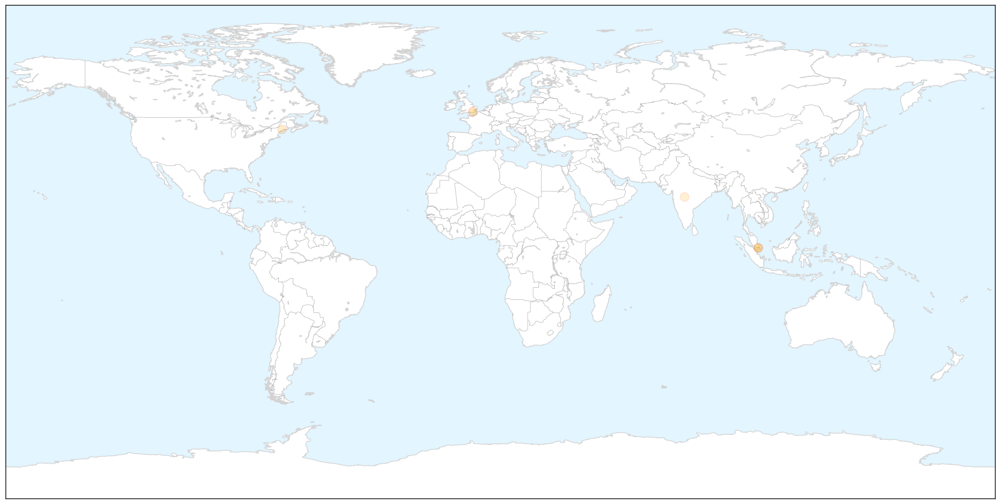
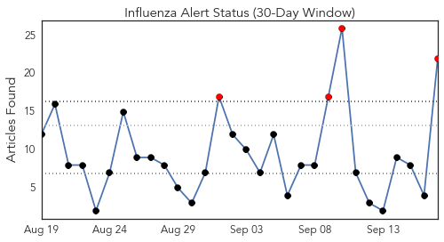
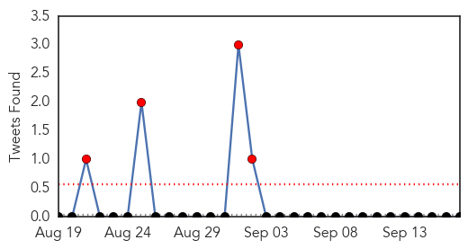
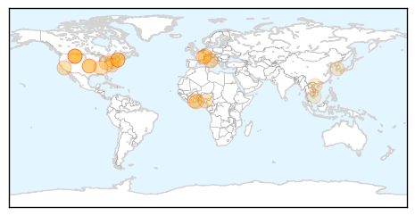
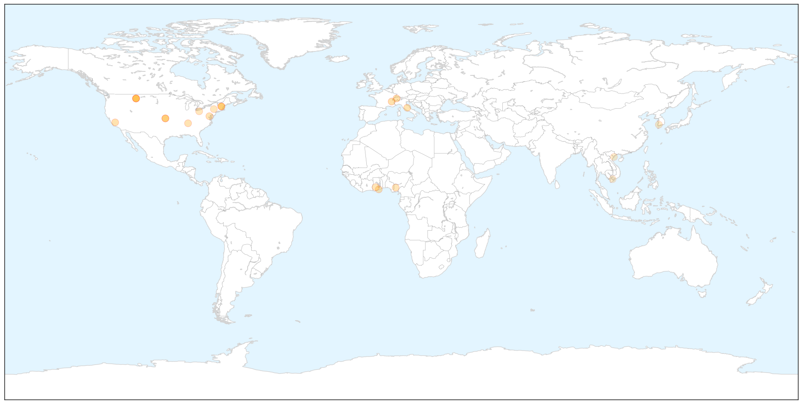
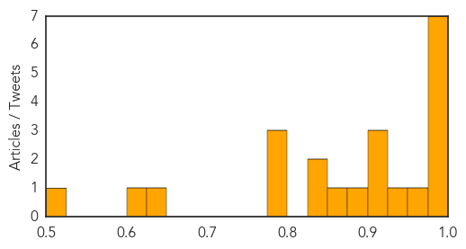

Meningitis
30-Day Web Trend
0 alerts, 0 warnings

30-Day Twitter Trend
0 alerts, 0 warnings

Article Locations

X

Article Confidences

Top Articles:
- 0.878
- Uckfield meningitis campaigner urges community to get vaccinated
- 0.767
- Three Hawke's Bay tots contract Meningococcal disease
- 0.720
- Strain of bacteria linked to infections from raw fish found
- 0.615
- Officials confirm two unrelated meningitis cases in MSAD 60
- 0.596
- Scientists discovers strain of GBS bacteria linked to raw fish, news, Health News, AsiaOne YourHealth
- 0.524
- New consignment of TB vaccine to arrive in SA
Top Tweets:
-
No tweets found for Sep 17, 2015
Influenza
30-Day Web Trend
4 alerts, 0 warnings

30-Day Twitter Trend
4 alerts, 0 warnings

Article Locations

X

Article Confidences
Top Articles:
- 0.998
- Flu season hits NH; three test positive for influenza virus
- 0.998
- Cascade City-County Health Department hosting flu shot clinics - KRTV.com
- 0.992
- Cascade City-County Health Department hosting flu shot clinics
- 0.989
- Mason County Health Department receives shipment of flu vaccines
- 0.985
- What You Need to Know About the 2015-2016 FLU SEASON
- 0.982
- This year's flu vaccine better than last year: US
- 0.975
- HEALTH AWARENESS
- 0.951
- Flu Season Arrives Early in New Hampshire - Story
- 0.943
- Time for your flu shot; this year’s vaccine has arrived
- 0.913
- FDA panel recommends Fluad, possibly the first U.S. boosted flu jab
- 0.911
- Hospital Employee Flu Vaccination Rates Expected to be Strong
- 0.901
- Barnes: It's time to get your flu shot
- 0.891
- It’s time for this year’s updated flu vaccine
- 0.860
- No new reported cases of bird flu since August
- 0.841
- No new reported cases of bird flu since August
- 0.834
- N85m lost to bird flu outbreak
- 0.796
- Flu shot clinics begin in Great Falls Sept. 22
- 0.790
- Influenza Vaccination Coverage Among Health Care Personnel — United States, 2014–15 Influenza Season
- 0.787
- Three Simple Steps to Fight the Flu
- 0.636
- S. Korea issues bird flu alert following suspected cases at 2 duck farms
- 0.600
- USAID provides $2 million to battle animal diseases
- 0.516
- USAID helps Vietnam prevent pandemic threats
Top Tweets:
-
No tweets found for Sep 17, 2015